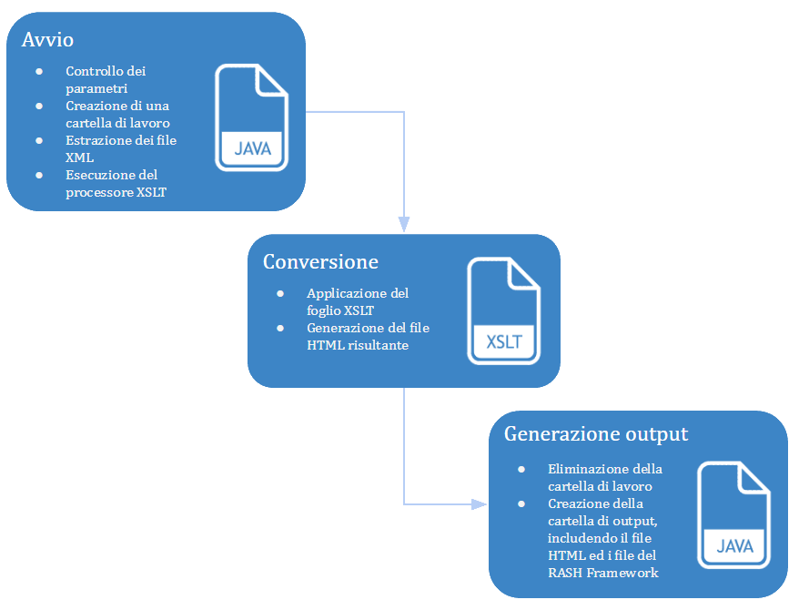
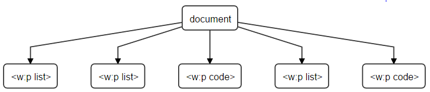

In questo lavoro di tesi viene presentato DOCX2RASH, uno strumento che permette di convertire articoli scientifici scritti con Microsoft Word in formato DOCX nel formato RASH, un sottoinsieme di HTML. Questo software permette agli autori di articoli scientifici di usare Microsoft Word per la scrittura dei propri lavori, ottenendo allo stesso tempo i benefici dati dal formato HTML, tra cui interattività, usabilità e facilità di processamento da parte delle macchine.
Attualmente il formato più usato sia per la sottomissione che per la pubblicazione di articoli scientifici è PDF . Questo formato presenta benefici innegabili per quanto riguarda la distribuzione e la lettura dei documenti da parte degli esseri umani, poiché si tratta di file statici, che non prevedono interazioni, e possono così garantire di essere visualizzati correttamente su qualunque dispositivo, a patto di avere un software appropriato.
PDF non è però esente da difetti, tra cui la mancanza di interattività, ovvero l’impossibilità di inserire all’interno di articoli scientifici contenuti dinamici che si adattino alle esigenze del lettore. Un altro problema è che la codifica dei file PDF avviene in formato binario, rendendo difficile l’estrazione di dati dal contenuto dei documenti , come metadati sull’autore o anche il semplice testo del documento. Un’altra critica posta nello specifico a PDF è che sia nato come formato proprietario di Adobe, ed anche se ora è uno standard aperto, i principali software che ne permettono la manipolazione sono proprietari di Adobe.
Per ovviare a questi problemi si può fare uso di HTML e delle tecnologie basate su questo linguaggio per la scrittura di articolo scientifici, che permetterebbero di avere dati facilmente accessibili e condivisibili. Ad esempio, essendo HTML un formato testuale, è facile estrarre il titolo del documento cercando il contenuto del tag <title>. Estrarre la stessa informazione da PDF è meno banale e per farlo bisogna fare uso di software appropriati come Adobe PDF Library .
Inoltre in HTML grazie all’uso di CSS e Javascript è possibile creare articoli scientifici che possano presentare dati in modo sofisticato, ad esempio proponendo al lettore diversi stili presentazionali per il contenuto testuale o presentando grafici interattivi, coinvolgendo maggiormente l’utente durante la lettura.
Il semplice uso di HTML non pone però abbastanza vincoli sulla struttura degli articoli scientifici. Questo linguaggio permette infatti di creare strutture ambigue, sia perché dà la possibilità agli autori di raggiungere lo stesso risultato visivo usando strutture anche molto differenti, sia perché unisce concetti strutturali a concetti presentazionali. È per esempio possibile usare le tabelle per ottenere particolari effetti grafici invece che usarle nel modo corretto, ovvero per presentare dati in modo tabellare.
In modo da ovviare ai problemi di HTML illustrati precedentemente, sono stati introdotti diversi linguaggi che semplificano HTML eliminando le possibili ambiguità. Ad esempio, due autori differenti potrebbero rispettivamente decidere di usare i tag <section> e <div> per indicare l’inizio di una sezione. HTML suggerisce chiaramente di usare il primo, ma non vieta in nessun modo l’uso del secondo. Tra questi linguaggi c’è RASH, un linguaggio per la scrittura di articoli scientifici basato su HTML, che prevede l’uso di un ristretto numero di elementi. Inoltre anche l’uso di questi elementi è stato regolato attraverso la definizione di una grammatica formale scritta in modo da rimuovere qualsiasi ambiguità.
Seppur RASH sia una buona soluzione per scrivere articoli scientifici in HTML, scrivere documenti scientifici che siano conformi a questo linguaggio può essere un lavoro tedioso anche per coloro che sono esperti utilizzatori di HTML. Per questa ragione RASH è accompagnato da un insieme di strumenti per facilitarne l’uso e l’adozione. Questi software, insieme a RASH, costituiscono il RASH Framework. Uno di questi strumenti è ODT2RASH, che permette di convertire documenti in formato ODT scritti con software liberi, quale OpenOffice, in formato RASH. L’esistenza di un convertitore di questo tipo permette agli autori di articoli scientifici di poter scrivere concentrandosi solo sul contenuto del proprio documento, lasciando a ODT2RASH il compito di convertirlo in HTML. Di norma la sottomissione di articoli scientifici non avviene però in formato HTML, ma in PDF. Per ovviare a questo problema, tra gli strumenti del RASH Framework figura ROCS , un servizio web per la conversione di documenti RASH. Questo servizio è in grado di convertire articoli in formato RASH nel formato più appropriato per la sottomissione dell’articolo, ad esempio Springer LNCS singola colonna o ACM ICPS doppia colonna.
Tuttavia il solo supporto al formato ODT si è rivelato non essere sufficiente per coprire una fascia di utenza abbastanza larga. Per ovviare a questo problema è necessario supportare anche Microsoft Word, uno dei software di word-processing più popolari . Il contributo principale del mio lavoro di tesi è stato quindi lo sviluppo di uno strumento, chiamato DOCX2RASH, che permette la conversione di documenti DOCX scritti con Microsoft Word nel formato RASH.
Lo sviluppo di DOCX2RASH è iniziato individuando quali fossero le possibili strutture esprimibili in RASH (e.g. formule, tabelle, sezioni, immagini, ecc.) e come poterle scrivere in Microsoft Word nel modo più naturale possibile. Grazie a precedenti implementazioni e studi sulla conversione da ODT a RASH , ho analizzato quali funzioni di OpenOffice venissero usate per scrivere articoli compatibili con RASH. Al fine di garantire trasversalità all’interno degli strumenti del RASH Framework ho previsto l’uso di queste stesse funzioni anche all’interno di Microsoft Word.
Per implementare il convertitore ho adottato il linguaggio XSLT, progettato appositamente per eseguire conversioni da XML a XML, linguaggio di cui DOCX fa internamente uso ed in cui HTML è serializzabile.
Durante lo sviluppo è stato adottato un processo Test Driven Development (TDD) al fine di massimizzare la qualità del software. Prima dello sviluppo di DOCX2RASH sono stati preparati dei file DOCX di test che facessero ognuno uso di diverse funzionalità di Microsoft Word, in modo da descrivere tutte le strutture che possono essere create in RASH. Lo sviluppo è poi proceduto incrementalmente convertendo uno ad uno questi file di test, fino ad ottenere infine un software che fosse in grado di convertire tutte le strutture previste.
Sempre grazie all’uso dei file di test, è stata infine effettuata un’analisi delle performance di DOCX2RASH, calcolando quanto ci mettesse in media a convertire ognuno di questi file. Facendo osservazioni sul contenuto dei file è stato analizzato quali strutture dei documenti DOCX ci mettessero più tempo per essere convertite. Le strutture che sono risultate essere più impegnative per essere processate sono le immagini. I risultati evidenziano inoltre come la quantità e la varietà di strutture utilizzate comportino un notevole aumento del tempo di conversione.
Il resto della tesi è organizzato come segue:
Il contesto scientifico e tecnologico in cui si posiziona il mio lavoro di tesi, è discusso nel capitolo .
L’architettura ad alto livello dell’applicazione, come ho realizzato il processo di conversione ed alcune note riguardo lo sviluppo sono spiegati nel capitolo .
Le scelte tecnologiche e la struttura a basso livello dell’applicazione vengono approfondite nel capitolo .
La valutazione del software, insieme ad una descrizione degli strumenti utilizzati sono approfonditi nel capitolo .
Prima di entrare nel merito della conversione stessa è bene inquadrare ed analizzare il contesto scientifico al quale questa tesi fa riferimento, esplorando quali sono i limiti delle tecnologie usate correntemente e quali siano invece le novità tecnologiche che questa tesi vuole proporre.
I principali aspetti su cui questa tesi si posiziona sono la conversione da DOCX a HTML, i formati ed editor WYSIWYG basati su HTML per articoli scientifici, ed il semantic publishing.
La conversione da DOCX a HTML è una operazione utile per poter scrivere un documento con Microsoft Word e poterlo esportare in HTML in modo da renderlo visualizzabile sui web browser. Esistono un certo numero di convertitori che realizzano questa conversione. In questa sezione ne analizzerò alcuni focalizzandomi soprattutto sul risultato della conversione. Nella tabella vengono riassunti quali elementi vengono gestiti correttamente dai convertitori presi in esame.
Microsoft Word stesso permette di esportare i documenti in formato HTML. Essendo un software proprietario non posso entrare nel merito della conversione, ma posso analizzarne i risultati.
In seguito alla conversione viene creato un file HTML ed una cartella contenente le immagini. Visivamente il file prodotto è molto simile a come viene presentato su Microsoft Word. Dentro il file HTML sono infatti definiti degli stili CSS che regolano l’uso dei font ed il colore del testo a seconda degli stili usati su Microsoft Word.
Le strutture più complesse, come caselle di testo o equazioni, vengono convertite in immagini e poste dentro la cartella citata precedentemente. Questo rappresenta un grande ostacolo per l’accessibilità del documento, in quanto le immagini non possono in alcun modo essere lette e interpretate in modo appropriato mediante l’uso di tecnologie assistive, come gli screen reader.
PyDocX è uno strumento di conversione open source scritto in Python ed è sotto licenza Apache. Questo software è utilizzabile sia come strumento a riga di comando, sia come libreria per essere integrato in altri progetti.
Il risultato della conversione è un singolo file HTML. Gli stili predefiniti di Word non vengono mantenuti, ma sono applicati degli stili CSS predefiniti. Le immagini vengono riportate all’interno del documento HTML sotto forma di data URI . Le caselle di testo vengono gestite estraendone il testo e riportandolo normalmente nel documento. Le equazioni non sono gestite e non vengono riportate nel file HTML.
Mammoth è uno strumento di conversione open source sotto licenza BSD-2-Clause. Questo strumento è implementato in diversi linguaggi: Java, Javascript, Python, .NET ed è anche disponibile come estensione di Wordpress.
Il file HTML di conversione presenta gli stessi risultati di PyDocX, tranne per il fatto che qui non viene dato nessuno stile CSS agli elementi.
| Strumento | Testo | Stili predefiniti: Titolo1 e Titolo2 | Stili e font | Caselle di testo | Immagini | Equazioni | Note a piè di pagina |
|---|---|---|---|---|---|---|---|
|
Microsoft Word |
X |
X |
X |
Tramite immagine |
X |
Tramite immagine |
X |
|
PyDocX |
X |
X |
Viene dato uno stile predefinito |
X |
X |
Non gestite |
X |
|
Mammoth |
X |
X |
Non gestiti |
X |
X |
Non gestite |
X |
Nel corso degli anni sono stati prodotti un certo numero di formati HTML per la scrittura di articoli scientifici. Analizziamone alcuni dei più rilevanti.
Scholarly HTML è stato uno dei primi linguaggi ad introdurre HTML come formato per articoli scientifici. Questo linguaggio non pone restrizioni sui tag utilizzabili, ma richiede soltanto che l’articolo abbia:
una sintassi HTML valida;
un URI che identifichi il documento come ScHTML;
uno o più creatori;
una data;
opzionalmente, ma consigliato, un titolo.
Scholarly HTML non è quindi definito da una grammatica formale, ma pone solamente dei semplici vincoli su quali metadati un articolo scientifico debba contenere. Esiste inoltre uno strumento, chiamato norma , per la conversione di XML, SVG e PDF in Scholarly HTML.
Nel 2015 è nato da science.ai un altro progetto che porta lo stesso nome, ovvero Scholarly HTML . Questo progetto pone una particolare enfasi sull’uso di linguaggi HTML, RDFa e JSON-LD per definire un formato che permetta agli articoli di essere facilmente processato da parte delle macchine. Non viene definita una grammatica formale ma è disponibile una documentazione che spiega come fare uso dei tag HTML e di annotazioni schema.org per scrivere articoli scientifici in questo formato. È anche disponibile un convertitore da DOCX a Scholarly HTML, rendendo di fatto possibile l’uso di Microsoft Word come ambiente di videoscrittura WYSIWYG per questo formato.
Uno degli autori del progetto precedente è anche a capo di una community di W3C chiamata Scholarly HTML
che punta a creare un HTML vernacular
per la creazione di un formato web per articoli scientifici. Al momento questo formato è un fork dello Scholarly HTML di science.ai visto sopra. Questa versione non supporta al momento (2016) Microsoft Word come editor WYSISWYG.
PubCSS è un formato definito attraverso l’uso di template HTML. Il suo principale punto di forza è la disponibilità di file CSS intercambiabili che implementano i layout ACM SIG Proceedings , ACM SIGCHI Conference Papers , ACM SIGCHI Extended Abstracts e IEEE Conference Proceedings .
È inoltre supportato l’uso di formule nel formato MathML . È possibile esportare gli articoli in PDF attraverso l’uso di Prince , un software gratuito per uso non commerciale, oppure usando la funzione di conversione in PDF del browser.
HTMLBook è un formato di O’Reilly basato su XHTML5 ed è uno dei primi formati per creare documenti HTML ad essere introdotto da un editore. Nello specifico, è pensato per la scrittura di libri attraverso un sottoinsieme degli elementi di XHTML5, regolati da una grammatica definita in XML Schema. Supporta l’uso di formule nel formato MathML. Vengono forniti dei file CSS per permettere la stampa di PDF o secondo una visualizzazione simile a quella dei dispositivi per la lettura di EPUB/MOBI.
Research Articles in Simplified HTML (RASH) è un sottoinsieme di HTML e prevede l’uso di soli 32 elementi per la scrittura di articoli scientifici.
La restrizione a questi elementi è stata operata in base ad uno studio della teoria dei pattern strutturali per documenti di markup , dando ad ogni tag del linguaggio un significato e ruolo ben preciso, dove l’obiettivo è quello di minimizzare il numero di tag possibili pur mantenendo un’espressività del linguaggio soddisfacente. I benefici che si traggono da questa restrizione sono una disambiguazione del linguaggio e l’ottenimento di una struttura ben definita, la quale facilita la conversione tra linguaggi.
Oltre alla riduzione del numero di tag all’interno del linguaggio, è stato anche fatto in modo che questi potessero presentarsi solo secondo un certo ordine e certi contesti, grazie a questo accorgimento è possibile evitare situazioni di ambiguità. È stata quindi definita una grammatica XML secondo il formato RELAX-NG .
RASH prevede inoltre un pieno supporto alle tecnologie di semantic web, prevedendo l’uso di RDFa in ogni elemento del linguaggio e l’aggiunta di script di tipo Turtle , RDF/XML e JSON-LD.
Questi dettagli portano RASH a percorrere una strada fondamentalmente diversa rispetto alle tecnologie discusse in precedenza, facendo i conti con la realtà mira a mantenere l’attuale processo di pubblicazione degli articoli ma allo stesso tempo cerca di rendere appetibile il formato HTML agli editori, i quali inizieranno ad accettare HTML come formato solo quando ce ne sarà una necessità, ad esempio quando verrà adottato da un certo numero di conferenze .
La facilità di conversione diventa quindi un aspetto fondamentale per essere accettato in conferenze e da editori: RASH può essere infatti subito adottato come linguaggio per la scrittura di un articolo, il quale può essere in seguito convertito in un formato più convenzionale (e.g. LaTeX) al momento della pubblicazione per essere accettato dagli editori.
Se finora si è trattata la difficoltà nella pubblicazione di un articolo, quindi dal punto di vista degli editori, è altresì vero che solamente una ristretta fascia di autori hanno le competenze per scrivere direttamente in formato HTML, e questa fascia si restringe ulteriormente se consideriamo l’aggiunta di annotazioni semantiche. Per questi motivi gli articoli in formato RASH sono progettati per essere scritti tramite software di word-processing ai quali gli autori sono già abituati, tra i quali spicca Microsoft Word, ed essere convertiti in secondo luogo a RASH.
RASH è contenuto all’interno del RASH Framework, una collezione di specifiche e software che permettano la scrittura, conversione ed estrazione di articoli scientifici in formato RASH.
Tra questi strumenti ce ne sono alcuni che è importante discutere prima di procedere con la presentazione del mio contributo.
ROCS è un servizio web che integra tutti gli strumenti di conversione sviluppati per il RASH Framework e li offre all’utente tramite una interfaccia grafica. Prima del momento in cui ho iniziato a lavorare alla mia tesi, ROCS integrava già ODT2RASH , un software che converte documenti in formato ODT, quindi prodotti da programmi di word-processing liberi, come OpenOffice o LibreOffice. Studi condotti durante il workshop SAVE-SD , nelle sue edizioni 2015 e 2016, le quali accettavano la sottomissione di articoli in formato HTML, hanno rivelato una buona soddisfazione da parte degli autori che hanno adottato questo formato, ma anche una forte esigenza del supporto a Microsoft Word.
Oltre ai formati HTML, esistono anche degli editor WYSIWYG per la scrittura di articoli scientifici in HTML, discutiamone alcuni.
Dokieli è un’applicazione web che, attraverso un approccio WYSIWYG, permette la scrittura di un articolo scientifico direttamente nel browser. Le sue funzioni non si fermano però alla semplice scrittura ma includono strumenti di pubblicazione, creazione di commenti sugli articoli ed anche un sistema di notifiche. Sono gestiti inoltre multipli layout di visualizzazione, ovvero Springer LNCS, ACM ICPS ed uno web-based. Gli articoli possono inoltre integrare video e font icon.
Non è corredato da una grammatica formale che definisca il linguaggio, ma si può fare uso di template HTML che facilitano una corretta scrittura.
Infine, direttamente dal browser è possibile esportare l’articolo in formato PDF.
Anche Fidus Writer segue un approccio WYSIWYG, adottando un’interfaccia ispirata dai software di videoscrittura, Google Docs in particolare. Come quest’ultimo è un editor collaborativo in tempo reale e permette a più autori di lavorare sullo stesso articolo contemporaneamente.
Il formato degli articoli non è specificato e non è visibile, ma l’applicazione permette l’esportazione in HTML, EPUB e LaTeX. Una versione correntemente in beta esporta anche in DOCX e ODT.
Al giorno d’oggi il processo di pubblicazione degli articoli scientifici ne prevede prima la scrittura usando strumenti a scelti dall’autore (ad esempio, LaTeX o Microsoft Word) e, nella maggior parte dei casi, vengono in seguito esportati e sottomessi all’editore in formato PDF.
Portable Document Format (PDF) è un formato introdotto da Adobe che ha visto la sua primo rilascio nel 1993, nascendo inizialmente come formato proprietario, venendo poi rilasciato come standard aperto nel 2008. Questo formato permette la creazione di file statici che contengano testi ed immagini ed ha i grandi pregi di garantisce una corretta visualizzazione del documento in modo indipendente dal dispositivo su cui è visualizzato e grazie a questo e di essere molto semplice da archiviare e distribuire. Non stupisce quindi che la distribuzione di articoli scientifici avvenga per l’80% in questo formato .
In un mondo dove la distribuzione di articoli avviene perlopiù attraverso Internet, PDF è stato però definito in contrasto con lo spirito del Web
, essendo un formato statico, quindi non interattivo, e difficile da leggere per le macchine. PDF è infatti sì uno standard aperto, ma la codifica dei file avviene in formato binario, normalmente tramite strumenti proprietari di Adobe, e ciò rende difficile, anche se non impossibile , l’estrazione di dati da questi file. È insomma un buon formato per essere letto da esseri umani, ma molto meno buono per essere letto da macchine.
Per sopperire a queste mancanze di PDF, la comunità scientifica nell’ambito delle tecnologie web propone l’uso di HTML per la sottomissione e distribuzione di articoli scientifici.
L’uso di HTML, unito ad altre tecnologie quale CSS e Javascript, permette infatti di creare articoli scientifici interattivi che siano ancora più stimolanti da leggere da parte degli esseri umani rispetto alla visualizzazione statica offerta da PDF. Per fare un semplice esempio, il RASH Framework permette la modifica del layout dell’articolo tramite la semplice interazione con un bottone inserito nel fondo della pagina.
Ma questa è solo una piccola goccia nell’oceano di funzioni che possono abilitare l’uso di queste tecnologie. È facile infatti pensare a video inseriti all’interno di articoli o addirittura a intere applicazioni Javascript interattive all’interno del documento, si pensi ad esempio a grafici interattivi o altri modi originali per presentare i dati.
Dai benefici che le tecnologie web portano alla realizzazione di articoli scientifici nasce il semantic publishing, termine col quale si intende l’arricchimento di pubblicazioni scientifiche mediante l’uso degli standard web moderni, al fine di migliorare l’esperienza di lettura da parte degli esseri umani ed il processamento degli articoli da parte delle macchine, attraverso l’uso di modelli per rappresentare metadati nello standard RDF .
L’ultima parte della definizione fa riferimento alle tecnologie di semantic web
. Queste permettono una facile lettura e condivisione da parte delle macchine dei dati contenuti nel web. Citando il noto Tim Berners-Lee, Il semantic web cambierà profondamente la natura di come la conoscenza scientifica viene prodotta e condivisa, in maniere che ora noi possiamo solo lontanamente immaginare
(2001) . Ora, a 15 anni dalla sua dichiarazione, le tecnologie per realizzare questa visione sono già impiegate nel web da anni, basti pensare a tutto il lavoro fatto sugli Linked Open Data nella pubblica amministrazione, come http://www.dati.gov.it/ che rende disponibile una grande quantità di dati sulla nostra nazione.
Per approfondire queste tecnologie è bene partire da Resource Description Framework (RDF) , che ricopre sicuramente un ruolo da protagonista. Esso è stato adottato come raccomandazione dal W3C nel 1999 ed è uno strumento per rappresentare informazioni sul web. È strettamente legato al concetto di triple, ovvero espressioni che seguono la seguente forma: soggetto-predicato-oggetto. Il soggetto denota la risorsa ed il predicato denota una relazione tra il soggetto e l’oggetto.
Le informazioni così strutturate sono visualizzabili in un grafo orientato dove ad ogni nodo corrisponde una risorsa e ad ogni arco corrisponde un predicato. È degna di nota anche l’esistenza di un linguaggio di interrogazione per dati serializzati tramite RDF, chiamato SPARQL , esso ha una sintassi simile a SQL e trova alcune delle sue principali implementazioni in Apache Jena e OpenLink Virtuoso .
RDF propone quindi un modo astratto per organizzare informazioni, informazioni che è possibile serializzare in vari formati, tra i quali:
RDF/XML (1999) – fa uso di una sintassi XML;
RDFa (2004) – vede il suo principale uso in coppia con HTML. Le annotazioni vengono espresse come attributi degli elementi HTML;
JSON-LD (2010) – fa uso di una sintassi JSON;
Turtle (2011) – fa uso di una sintassi simile a quella usata in SPARQL.
Per fare in modo che queste relazioni tra entità abbiano un significato ben preciso interpretabile anche dalle macchine si è sentita la necessità di creare delle ontologie, ovvero dei modelli che descrivono i tipi di dato e le loro relazioni nel contesto di un preciso dominio. Questo è reso possibile tramite il Web Ontology Language (OWL) , questo è reso possibile. Un’ontologia è una definizione formale dei tipi, delle proprietà e delle relazioni delle entità all’interno di uno specifico dominio. Per dare al lettore un’applicazione concreta di OWL, la specifica ufficiale del W3C per la definizione di modelli ontologici per il Web.
A seguito della necessità del supporto a DOCX all’interno del RASH Framework, il mio contributo è stato lo sviluppo dell’applicazione che vado ora a presentare: DOCX2RASH.
Si tratta di un software a riga di comando che permette la conversione di un articolo scientifico scritto tramite Microsoft Word usando il formato DOCX in formato RASH, potendo così usufruire sia dei vantaggi offerti del formato HTML, sia della comodità di scrivere in un ambiente piacevole come Microsoft Word .
Vediamo ora quali scelte sono state effettuate durante lo sviluppo del progetto.
Uno dei requisiti del convertitore è che permetta di esprimere all’interno di Microsoft Word tutte le possibili strutture descritte da RASH introdotte nella sua documentazione , che sono le seguenti:
abstract;
titolo e sottotitolo;
autori;
categorie;
parole chiave;
sezioni e sottosezioni;
paragrafi: normali, contenenti codice, contenenti una citazione;
testo: in grassetto, corsivo, sottolineato, con apici, pedici e con citazioni ;
liste: puntate e numerate;
immagini: inline o con descrizione;
formule: inline o con descrizione;
link ipertestuali;
tabelle;
riferimenti ad altri elementi dell’articolo;
note a piè di pagina;
bibliografia;
riconoscimenti.
Si rende necessario ora capire come questi elementi possano essere espressi all’interno di Microsoft Word, ma sorgono dei problemi. Così come nel capitolo precedente si è discusso del fatto che l’uso di HTML nella sua interezza comporti problemi per quanto riguarda la conversione, lo stesso discorso vale anche per Microsoft Word. Questo infatti è un software dalle enormi dimensioni, con una quantità di funzioni ben al di sopra di quelle necessarie per scrivere un articolo scientifico. Per fare in modo che gli utenti si concentrino solo sul contenuto del proprio articolo scientifico, senza pensare a come questo vada presentato, si è fatto uso degli stili predefiniti di Microsoft Word e dei suoi principali strumenti.
Al fine di garantire agli utenti una trasversalità all’interno degli strumenti del RASH Framework, per individuare quali stili e funzioni di Microsoft Word usare, ho seguito le stesse regole previste dal software ODT2RASH. Questo è un software del RASH Framework che implementa la conversione dal formato ODT (usato ad esempio da OpenOffice) al formato RASH, e già esisteva nel momento in cui ho iniziato a lavorare a DOCX2RASH. Seppur ci siano differenze tra OpenOffice e Microsoft Word, tutte le funzionalità che erano state previste all’interno del primo hanno trovato una corrispondenza diretta nel secondo. Queste regole sono semplici ed intuitive: per definire le strutture testuali si fa uso degli stili predefiniti di Microsoft Word, mentre per quelle non testuali si fa uso di alcuni dei widget del software. Per istruire l’utente al corretto uso di Microsoft Word, in modo da essere compatibile con il convertitore, ho reso pubblico un documento che descrive come creare un articolo in formato DOCX che sia compatibile con DOCX2RASH. Si tratta di un documento DOCX che fa uso di tutte le possibili strutture e spiega a parole e tramite immagini come inserirle. Essendo inoltre in formato DOCX è possibile interagire direttamente con esse e vedere come queste sono state aggiunte al documento.
Si può ora parlare di come è stato approcciato il processo di conversione vera e propria, ovvero come fare partendo da un file in formato DOCX ad ottenerne uno che presenti gli stessi contenuti, ma in formato RASH.
Il primo passo da affrontare è l’analisi di cosa contenga un file in formato DOCX. Questo altro non è che un archivio ZIP contenente svariati file XML nel formato Office Open XML (OOXML) , non tutti utili ai fini della conversione. Fondamentalmente uno solo di questi contiene le informazioni sulla struttura del documento, le quali sono organizzate secondo una struttura gerarchica, che si ben presta alla sintassi XML. Altri file contengono informazioni utili, ma non volendo per il momento scendere nei dettagli tecnici, rimando al prossimo capitolo una spiegazione di questi.
A questo punto si è reso necessario dare un significato al contenuto di questi file, associandoli ad un corrispondente output HTML. Per svolgere questo compito DOCX2RASH fa uso del linguaggio XSLT per eseguire la conversione: questo è infatti un linguaggio progettato appositamente per eseguire trasformazioni tra linguaggi basati su XML, motivo che lo rende lo strumento più adeguato per eseguire la conversione, essendo sia DOCX che RASH basati su XML. Usare un linguaggio di programmazione general purpose sarebbe stato sicuramente più difficoltoso rispetto ad usare XSLT, che è ideato per questo compito specifico.
Al fine di convertire un file DOCX in RASH bisogna seguire i seguenti passi:
prendere in input il file DOCX da convertire;
creazione di una cartella di lavoro;
estrarre nella cartella di lavoro i file XML dal file DOCX;
eseguire la conversione tramite XSLT, producendo il file HTML;
eliminare la cartella di lavoro;
creare una cartella di output che contenga il file HTML e gli strumenti del RASH Framework necessari alla corretta visualizzazione dell’articolo.
Per svolgere questi semplici compiti, riassunti nella figura , un linguaggio di programmazione general purpose è più che adatto e, seguendo le scelte fatte per ODT2RASH, ho usato Java.

Ho iniziato quindi il processo di sviluppo vero e proprio partendo dalla creazione di un’applicazione Java minimale che mi permettesse di applicare un foglio XSLT ad un dato documento DOCX. Ho in seguito parametrizzato l’applicazione per fare in modo che questa fosse eseguita su file presi in input invece che scritti dentro al codice.
Le prime strutture che ho provveduto a convertire sono state quelle più semplici quali il codice e blocchi di codice, procedendo in seguito verso quelle più complicate fino a gestirle tutte.
Le ultime fasi dello sviluppo sono invece servite per perfezionare l’applicazione Java facendo in modo che in fase di compilazione questa collezionasse le versioni più recenti degli strumenti necessari inclusi nel RASH Framework.
In XSLT è semplice convertire strutture gerarchiche, essendo progettato per eseguire conversioni da XML, ma il suo uso diventa decisamente più complesso in caso di strutture non gerarchiche.
In OOXML strutture come le sezioni, le liste, i blocchi di codice e le variazioni del testo hanno una struttura lineare, ovvero nella struttura ad albero del documento i nodi di queste strutture sono tutti figli dello stesso padre, come mostrato nella figura .
Per gestire questo tipo di strutture con XSLT ho adottato il seguente algoritmo generale:
definire una funzione booleana chiamata isInsideStructure che verifichi l’appartenenza di un elemento alla struttura;
definire una funzione booleana chiamata isFirstOfStructure che chiama quella definita in precedenza, ma verifica anche se è il primo elemento della struttura;
chiamare isFirstOfStructure sull’elemento corrente. Se la risposta è false allora si interrompe la conversione dell’elemento corrente. Altrimenti si procede, chiamando curr l’elemento corrente;
selezionare tutti i fratelli successivi di curr, chiamando foll questi elementi;
selezionare tutti i fratelli successivi di curr, ma che non appartengono alla struttura (usando isStructure per fare la verifica). Chiamare follNotInside questi elementi;
selezionare gli elementi successivi a follNotInside, chiamandoli follFollNotInside;
selezionare gli elementi che appartengono all’unione di curr e foll, ma che non appartengono all’unione di follNotInside e follFollNotInside;
quest’ultima selezione è la struttura cercata.
Nel codice è possibile vedere un esempio di applicazione di questo algoritmo.

elements =
<w:p 1 isInStructure />
<w:p 2 isInStructure />
<w:p 3 isNotInStructure />
<w:p 4 isInStructure />
<w:p 5 isNotInStructure />
curr =
<w:p 1 isInStructure />
foll =
<w:p 2 isInStructure />
<w:p 3 isNotInStructure />
<w:p 4 isInStructure />
<w:p 5 isNotInStructure />
follNotInside =
<w:p 3 isNotInStructure />
<w:p 5 isNotInStructure />
follFollNotInside =
<w:p 4 isInStructure />
<w:p 5 isNotInStructure />
union(curr, foll) =
<w:p 1 isInStructure />
<w:p 2 isInStructure />
<w:p 3 isNotInStructure />
<w:p 4 isInStructure />
<w:p 5 isNotInStructure />
union(follNotInside, follFollNotInside) =
<w:p 3 isNotInStructure />
<w:p 4 isInStructure />
<w:p 5 isNotInStructure />
union(curr, foll) except union(follNotInside, follFollNotInside) =
<w:p 1 isInStructure />
<w:p 2 isInStructure />
Tra le strutture lineari citate in precedenza, le liste sono quelle che hanno creato più problemi. Queste presentano la seguente organizzazione in OOXML: gli elementi di una lista vengono distinti dagli attributi w:ilvl e w:numId che indicano, rispettivamente, il livello di annidamento all’interno della lista corrente ed un id associato alla lista. Da notare che w:numId non è un id univoco per ogni lista, ma viene associato anche a più liste differenti. Nel codice vengono presentati due elementi lista.
Questa organizzazione, unita al fatto di poter definire liste annidate ed elementi aventi più paragrafi, è stata comunque gestita applicando l’algoritmo generale, reso però più complicato per i motivi appena descritti.
<w:p w14:paraId="4A14D311" w14:textId="457EB93C" w:rsidR="00DC2B73" w:rsidRDefault="00DC2B73" w:rsidP="00DC2B73">
<w:pPr>
<w:pStyle w:val="ListParagraph" />
<w:numPr>
<w:ilvl w:val="0" />
<w:numId w:val="3" />
</w:numPr>
</w:pPr>
<w:r>
<w:t>First item</w:t>
</w:r>
<w:r w:rsidR="0005341F">
<w:t xml:space="preserve"> 3rd</w:t>
</w:r>
</w:p>
<w:p w14:paraId="03632897" w14:textId="2994F9FB" w:rsidR="002F4FD1" w:rsidRDefault="002F4FD1" w:rsidP="002F4FD1">
<w:pPr>
<w:pStyle w:val="ListParagraph" />
<w:numPr>
<w:ilvl w:val="0" />
<w:numId w:val="2" />
</w:numPr>
</w:pPr>
<w:r>
<w:t>First item</w:t>
</w:r>
<w:r w:rsidR="0005341F">
<w:t xml:space="preserve"> 4th</w:t>
</w:r>
</w:p>
Scendiamo ora nel dettaglio descrivendo quali linguaggi di programmazione, strumenti e tecnologie ho scelto di adottare per lo sviluppo di DOCX2RASH.
Come detto anche nel capitolo precedente, avendo a disposizione i sorgenti di ODT2RASH, questo ha tracciato una linea guida anche in questo contesto: ho scelto infatti di adottare lo stesso stack tecnologico, differendo solo per qualche libreria usata.
DOCX2RASH è open source e disponibile su Github nella repository di RASH , insieme a tutte le altre risorse del RASH Framework. I file su cui ho lavorato direttamente sono elencati in .
rash
├── documentation
│ └── rash-in-docx.docx
├── sources
│ └── docx2rash
│ └── ...
├── testbed
│ └── docx
│ └── ...
├── tools
│ └── docx2rash
│ └── ...
└── xslt
├── from-docx.xsl
└── omml2mml.xsl
documentation/rash-in-docx.docx è un file di documentazione che spiega come usare Microsoft Word per produrre un file che sia compatibile con DOCX2RASH;
sources/docx2rash è la cartella che contiene i sorgenti della componente Java di DOCX2RASH;
testbed/docx è la cartella che contiene i testbed, dei file che hanno guidato lo sviluppo secondo l’approccio TDD. Questi file verranno approfonditi nel capitolo .
tools/docx2rash è la cartella che contiene l’applicazione DOCX2RASH compilata e pronta all’uso;
xslt/from-docx.xsl è il file XSLT che implementa la conversione da DOCX a RASH.
xslt/omml2mml.xsl è il file XSLT che implementa la conversione da OMML a MML.
I sorgenti sono sotto licenza ISC, riportata in .
Copyright (c) 2014-2015
Permission to use, copy, modify, and/or distribute this software for any
purpose with or without fee is hereby granted, provided that the above
copyright notice and this permission notice appear in all copies.
THE SOFTWARE IS PROVIDED "AS IS" AND THE AUTHOR DISCLAIMS ALL WARRANTIES
WITH REGARD TO THIS SOFTWARE INCLUDING ALL IMPLIED WARRANTIES OF
MERCHANTABILITY AND FITNESS. IN NO EVENT SHALL THE AUTHOR BE LIABLE FOR
ANY SPECIAL, DIRECT, INDIRECT, OR CONSEQUENTIAL DAMAGES OR ANY DAMAGES
WHATSOEVER RESULTING FROM LOSS OF USE, DATA OR PROFITS, WHETHER IN AN
ACTION OF CONTRACT, NEGLIGENCE OR OTHER TORTIOUS ACTION, ARISING OUT OF
OR IN CONNECTION WITH THE USE OR PERFORMANCE OF THIS SOFTWARE.
La ISC è una licenza libera approvata dalla Free Software Foundation e permette il riuso del software in qualsiasi contesto, anche all’interno di software proprietari.
Il punto più cruciale nella realizzazione del software sta nella decisione di come implementare effettivamente la conversione. Trattandosi a tutti gli effetti di una conversione tra formati definiti sulla base di XML, la scelta più naturale ricade nell’uso di XSLT.
XSLT (Extensible Stylesheet Language Transformations) è un linguaggio di tipo dichiarativo sviluppato dal W3C, progettato effettuare trasformazioni da XML a XML. Nello specifico il linguaggio è stato usato nella sua versione 2.0.
Il linguaggio è Turing-completo ed è possibile definire costrutti di controllo, variabili e funzioni; inoltre si fa largo uso di espressioni XPath per effettuare selezioni sul documento XML di input.
La sintassi del linguaggio stesso è XML e, senza scendere nel dettaglio, funziona definendo dei template
che vengono eseguiti quando viene incontrato un determinato tag che vi viene associato. Per dare al lettore un semplice esempio, in possiamo analizzare un pezzo di codice estratto da from-docx.xsl, il file che implementa la conversione. In questo codice viene definito un template che viene eseguito quando viene incontrato il tag w:tr (che è la riga di una tabella). Quando eseguito, viene creata una variabile booleana che assume il valore true se la riga in questione è di intestazione, viene poi creato un tag <tr> all’interno del documento HTML finale e viene richiamato il prossimo template che farà match
con il nodo corrente.
<xd:doc scope="w:tr">
<xd:desc>
<xd:p>This template creates table rows.</xd:p>
</xd:desc>
</xd:doc>
<xsl:template match="w:tr">
<xsl:variable name="isHeading"
as="xs:boolean"
select="./preceding-sibling::w:tblPr/w:tblLook/@w:firstRow = 1
and (not(exists(./preceding-sibling::w:tr)))"
/>
<tr>
<xsl:apply-templates>
<xsl:with-param name="isHeading" select="$isHeading" tunnel="yes" />
</xsl:apply-templates>
</tr>
</xsl:template>
Questo file XSLT che ho scritto necessita però di essere eseguito da un processore XSLT ed ho seguito quindi la scelta fatta per ODT2RASH di usare Saxon , che è implementato in Java.
Saxon rappresenta quindi una prima dipendenza per il mio progetto, ed al fine di semplificare il processo di inclusione delle dipendenze all’interno del progetto ho usato Maven.
Maven è uno strumento per l’automazione dei processi di compilazione di progetti Java e si occupa principalmente di 2 aspetti: building del progetto e gestione delle dipendenze. Il principale file di configurazione di è pom.xml, viene situato nella root del progetto Java ed al suo interno si possono specificare, tramite una sintassi XML, i processi di building.
Saxon non è l’unica dipendenza del progetto, per semplificare la gestione dei parametri di input si è infatti fatto uso di Commons CLI . Essa è una libreria Java di utilità che si occupa del parsing delle opzioni passate al programma tramite riga di comando. L’utlizzo di questo strumento rende semplice la gestione dei parametri di input e genera in automatico il messaggio di usage .
Nello specifico lo strumento è stato utilizzato un plugin per generare un file JAR contenente tutte le dipendenze esterne, in modo che esso possa essere eseguito in qualsiasi contesto si trovi.
Poiché un file DOCX è, di fatto, un archivio ZIP contenente dei file XML, come mostrato in , un’altra libreria di utilità di cui ho fatto uso è Zip4j , che fornisce funzioni di utilità per la compressione e decompressione di file ZIP.
Maven è stato inoltre utilizzato per collezionare le risorse del RASH Framework dentro il file JAR a tempo di compilazione. L’uso di questo plugin è utile perché il framework dispone di molte risorse e strumenti: in DOCX2RASH vengono usati i file CSS, Javascript, font, la grammatica di RASH e gli XSLT; queste risorse sono soggette a cambiamenti indipendentemente da DOCX2RASH, il quale può essere quindi aggiornato per fare uso delle nuove risorse tramite una semplice ricompilazione del progetto.
testbed-13-sources
├── [Content_Types].xml
├── _rels
├── customXml
│ ├── _rels
│ │ └── item1.xml.rels
│ ├── item1.xml
│ └── itemProps1.xml
├── docProps
│ ├── app.xml
│ ├── core.xml
│ └── custom.xml
└── word
├── _rels
│ └── document.xml.rels
├── document.xml
├── endnotes.xml
├── fontTable.xml
├── footnotes.xml
├── media
│ └── image1.png
├── numbering.xml
├── settings.xml
├── styles.xml
├── theme
│ └── theme1.xml
└── webSettings.xml
Ora che sono state introdotti tutti gli strumenti ed i linguaggi usati durante lo sviluppo, possiamo parlare di come essi siano stati utilizzati e come sia strutturata l’applicazione.
L’applicazione è composta da due componenti principali:
L’applicazione Java è il motore che mette in atto la conversione
Si occupa di coordinare tutti gli strumenti descritti in precedenza. Il workflow è il seguente:
parsing dei parametri di input;
creazione di una cartella di lavoro temporanea;
decompressione del file DOCX dentro la cartella di lavoro;
creazione della cartella di output;
copia delle risorse del RASH Framework nella cartella di output;
esecuzione di Saxon per effettuare la conversione, direzionando il file HTML risultante nella cartella di output;
eliminazione della cartella di lavoro.
Il componente XSLT è il cuore
del mio contributo, esso descrive come effettuare la conversione definendo dei template che catturano
i tag che definiscono le strutture citate in precedenza . Questi tag sono definiti secondo lo standard OOXML .
Viene ora presa in esame la conversione facendo riferimento ai file XML contenuti dentro ai file DOCX visti in figura . La conversione inizia dal file document.xml il quale contiene tutta la struttura del documento e vengono di seguito incontrati i vari tag dell’OOXML Schema.
Grazie alla possibilità offerta da XSLT di fare riferimento anche ad altri file XML, vengono usati anche i seguenti file che tratterò brevemente:
custom.xml: contiene le informazioni sui metadati del documento, quali autori, keywords, e categories;
document.xml.rels: contiene una mappatura tra id di link ed immagini, usati nel documento principale, e le loro informazioni;
footnotes.xml: contiene una mappatura tra gli id delle note a pié di pagina, usati nel file principale, ed il loro contenuto;
media: cartella contenente le immagini;
numbering.xml: contiene una mappatura tra gli id delle liste, usate nel file principale, e le informazioni associate ad esse;
styles.xml: contiene una mappatura tra i nomi degli stili usati nel file principale, che dipende dalla lingua ed il loro nome univoco.
È interessante inoltre approfondire la gestione delle formule presenti all’interno del documento DOCX: esse sono descritte secondo un altro linguaggio XML sviluppato da Microsoft chiamato OMML . Il RASH Framework per visualizzare le formule su browser in modo accessibile usa invece i formati MathML (MML), LaTeX e AsciiMath . Essendo MathML lo standard de facto per definire formule matematiche sul web, ho deciso di effettuare una conversione da OMML a MathML.
Per eseguire questa conversione è stato incluso all’interno di from-docx.xsl un secondo file XSLT omml2mml.xsl , sviluppato da (Text Encoding Initiative) TEI e rilasciato sotto licenza BSD-2 Clause, compatibile con la licenza ISC.
tree sample-rash
sample-rash
├── css
│ ├── bootstrap.min.css
│ ├── lncs.css
│ └── rash.css
├── fonts
│ ├── cmunbi.otf
│ ├── cmunbx.otf
│ ├── cmunbxo.otf
│ ├── cmunrm.otf
│ ├── cmunsi.otf
│ ├── cmunss.otf
│ ├── cmunsx.otf
│ ├── cmunti.otf
│ └── cmuntt.otf
├── js
│ ├── bootstrap.min.js
│ ├── jquery.min.js
│ └── rash.js
├── rash.rng
└── sample-rash.html
Il programma è richiamabile attraverso riga di comando ed espone l’interfaccia presente in .
usage: docx2rash
-h,--help Prints this help message
-i,--input <inputFile> The .docx file or directory to be converted
-o,--output <outputDirectory> The output directory
L’interfaccia è minimale e non presenta opzioni di sorta, riducendo al minimo la difficoltà nell’utilizzo degli strumenti. Vediamo ora il significato dei parametri presenti, entrambi obbligatori:
-i indica il file .docx oppure una cartella contenente dei file DOCX da convertire;
-o indica la cartella dove verrà inserito il file convertito in formato RASH.
Se tali parametri non vengono specificati o non siano validi, il programma informa l’utente degli errori che ha commesso. Nel caso i parametri siano validi viene avviato il processo di conversione e nel caso questa abbia successo, viene stampato un messaggio indicante il successo della conversione, come mostrato in .
$ java -jar docx2rash.jar -i docx/testbed-13.docx -o output-folder
File successfully converted in output-folder directory.
Una considerazione che è opportuno fare è che l’autore di un articolo scientifico non ha necessariamente le competenze per usare il programma o semplicemente potrebbe non avere voglia di avere a che fare con la riga di comando. Per questo motivo DOCX2RASH è stato pensato per poter essere integrato in ROCS , il quale è un servizio web che integra tutti gli strumenti di conversione sviluppati per il RASH Framework e li offre all’utente tramite una ben più gradevole interfaccia grafica. ROCS integra già ODT2RASH, il quale espone la stessa interfaccia del mio software, il processo di integrazione non dovrebbe pertanto essere difficile.
Dopo la produzione di un software è importante effettuare delle analisi di qualità sullo stesso, al fine di evidenziare ove ci possano essere criticità e cosa andare a migliorare in eventuali sviluppi futuri.
Prima illustrare i risultati delle analisi di efficienza ed efficacia di DOCX2RASH, introduco gli strumenti usati per svolgere tali analisi.
Prima dello sviluppo vero e proprio, seguendo lo stesso procedimento che è stato adottato per ODT2RASH, sono stati creati 13 testbed . Questi sono dei file DOCX, ognuno contenente una o più delle strutture elencate nella sezione .
I testbed creati sono stati organizzati come segue:
testbed-1.docx: è composto da un singolo paragrafo contenente del testo in grassetto, corsivo, sottolineato, con apici, pedici ed un link;
testbed-2.docx: introduce l’uso delle sezioni e sottosezioni, includendo anche un paragrafo sotto ad esse;
testbed-3.docx: include codice inline usato in 3 modi diversi (tramite uno stile predefinito o usando il font Courier o Courier new), un blocco di codice, ed un blocco di codice con un commento, contiene infine un ultimo paragrafo per assicurare la chiusura dell’ultimo blocco;
testbed-4.docx: contiene una citazione inline, ed un paragrafo di citazione;
testbed-5.docx: prova il corretto uso di liste, ordinate o numerate. Viene anche provato l’uso di liste annidate e liste contenenti elementi con paragrafi multipli;
testbed-6.docx: fa uso di note a piè di pagina;
testbed-7.docx: viene usata una formula inline ed una formula box, cioè contenuta da sola in un paragrafo;
testbed-8.docx: contiene un paragrafo con un’immagine inline ed un’immagine con descrizione;
testbed-9.docx: include una tabella con intestazione;
testbed-10.docx: mostra l’uso dei capitoli speciali, ovvero l’abstract, i ringraziamenti e la bibliografia;
testbed-11.docx: introduce l’uso dei metadati: autori, categorie e parole chiave dell’articolo;
testbed-12.docx: crea una tabella, una formula, un’immagine, un pezzo di codice e la bibliografia. Per ognuno di questi viene creato un riferimento all’interno di un primo paragrafo del documento;
testbed-13.docx: combina tutte le strutture introdotte dai testbed precedenti.
Questa organizzazione dei testbed è servita a direzionare lo sviluppo di DOCX2RASH secondo l’approccio TDD, i primi 12 sono infatti dei testi di unità, l’ultimo è invece un test di integrazione.
Ogni testbed inoltre, oltre a contenere sempre una nuova struttura rispetto ai precedenti, contiene dei paragrafi che spiegano l’uso in Microsoft Word dei nuovi elementi introdotti.
Al fine di valutare la bontà della conversione, si può fare uso di uno della grammatica formale di RASH , definita in RELAX NG.
RASH Validator è uno strumento facente anch’esso parte del RASH Framework. È stato sviluppato da me durante il periodo di tirocinio presso l’Università e rende possibile la validazione di un file RASH verificando che ne rispetti la grammatica.
usage: rashvalidator.py [-h] [-j] [-f dir] file
RASH Validator, validate a RASH file.
positional arguments:
file the file to be validated
optional arguments:
-h, --help show this help message and exit
-j, --json print to json if set
-f dir, --force dir force conversion from HTML to XML
$ python rashvalidator.py testbed-13.html
testbed-13.html is a valid RASH file.
$ python rashvalidator.py testbed-13-error.html
Found the following errors on testbed-13-error.html:
Row: 27
Column: 41
Message: attribute "proerty" not allowed here; expected attribute "charset", "content", "datatype", "id", "inlist", "lang", "prefix", "property", "rel", "resource", "rev", "typeof" or "vocab"
Type: RASH
Per valutare l’efficienza, ovvero i tempi di esecuzione di DOCX2RASH, ho sviluppato un piccolo software eseguibile a riga di comando: Average-time . Questo software automatizza l’esecuzione di un comando per un certo numero di volte e per ogni esecuzione ne calcola il tempo di esecuzione, restituendone infine la media in secondi.
Usage: average-time [options] <cmd> <times>
Options:
-h, --help output usage information
-V, --version output the version number
$ average-time "java -jar docx2rash.jar -i docx/testbed-1.docx -o output-folder" 2
1) 2.064
2) 2.133
Average: 2.099
Come introdotto prima, per fare un’analisi di efficienza ho usato il software average-time per valutare il tempo medio su 10 esecuzioni di ogni testbed. I risultati sono mostrati nella tabella .
I tempi fanno riferimento a delle esecuzioni avvenute su un Macbook Pro Retina 13” late 2012, avente un processore Intel Core i5 con frequenza a 2,5GHz.
| File | Strutture introdotte e commenti | Numero di parole | Tempo medio su 10 esecuzioni (s) |
|---|---|---|---|
|
testbed-1.docx |
Variazioni del testo |
30 |
1.487 |
|
testbed-2.docx |
Sezioni e sottosezioni |
104 |
1.468 |
|
testbed-3.docx |
Codice |
163 |
1.587 |
|
testbed-4.docx |
Citazioni |
53 |
1.546 |
|
testbed-5.docx |
Liste |
132 |
1.669 |
|
testbed-6.docx |
Note a piè di pagina |
37 |
1.499 |
|
testbed-7.docx |
Formule |
85 |
1.619 |
|
testbed-8.docx |
Immagini |
90 |
1.659 |
|
testbed-9.docx |
Tabelle |
81 |
1.493 |
|
testbed-10.docx |
Capitoli speciali |
196 |
1.627 |
|
testbed-11.docx |
Metadati |
94 |
1.473 |
|
testbed-12.docx |
Riferimenti |
202 |
1.880 |
|
testbed-13.docx |
Uso di tutte le strutture |
2902 |
3.486 |
|
Cartella contenente tutti i file precedenti |
6.299 |
||
|
testbed-13-no-img.doc |
Uso di tutte le strutture tranne le immagini |
2788 |
3.001 |
|
only-text.docx |
Solo testo semplice |
2902 |
1.494 |
|
tesi.docx |
Questa dissertazione in formato DOCX |
9904 |
14.045 |
Una prima semplice osservazione che è possibile fare, è che il tempo di esecuzione possa dipendere dalla lunghezza del testo contenuto nel file. Per questo motivo ho creato un altro file contenente esattamente 2902 parole, ma senza l’uso di alcuna struttura. La conversione di questo file ha dato luogo ad un tempo medio di 1.494 secondi. Il numero di parole fine a sé stesso non è quindi il motivo che porta ad avere alti tempi di esecuzione.
Un fattore che sicuramente contribuisce ad aumentare il tempo di esecuzione è l’uso di immagini: il testbed-13 ne contiene 15, eliminandole e rieseguendo la conversione si è ottenuto uno scarto di 0.485 secondi, che è un tempo considerevole, il 13.9% del totale. Visto che la struttura OOXML delle immagini non presenta particolari differenze rispetto ad altri elementi, questo tempo è aggiunto nella fase di decompressione del file DOCX ed alla copia delle immagini dentro la cartella di output. Non basta questo però per spiegare l’aumento di tempo per la conversione di testbed-13 rispetto ai file precedenti. Questo motivo è probabilmente dato dal numero e dalla varietà di strutture contenute in un file.
Un’ultima osservazione che si può fare su questi dati è che la conversione della cartella sia di gran lunga più efficiente della conversione di un singolo file: la somma dei tempi di conversione di ogni singolo file è infatti 22.493, molto superiore ai 6.299 secondi ottenuti convertendo i file in una singola esecuzione. Questa differenza di tempo è probabilmente dovuta ad un tempo di bootstrap dell’applicazione Java.
Per quanto non sia possibile assicurare l’assenza di bug e problemi all’interno del codice di docx2rash, sono stati adottati degli accorgimenti per massimizzare la bontà del risultato.
Innanzitutto, è stato adottato un processo Test Driven Development (TDD) per lo sviluppo del file XSLT, grazie all’uso dei testbed.
Lo sviluppo è proceduto incrementalmente implementando una struttura per volta, verificando se la conversione avesse prodotto i risultati attesi convertendo il file DOCX corrente e verificando anche di non aver generato errori nei file precedenti.
Sono stati adottati i seguenti metodi di verifica:
valutazione umana: semplicemente aprendo con il browser il file risultante la maggior parte degli errori possono essere individuati guardando se la conversione ha prodotto i risultati grafici attesi;
errori in console: aprendo la console del browser è possibile che il RASH Framework generi degli errori se il file non è valido;
validazione: se i precedenti metodi di verifica sono andati a buon fine, è possibile verificare formalmente la validità del file usando RASH Validator.
Inoltre è stato creato anche un file di test che usa tutte le strutture contemporaneamente per verificare che non ci siano problemi di interoperabilità. Questo file ha anche il compito di spiegare come usare Microsoft Word in modo da produrre un documento che sia compatibile con DOCX2RASH.
Quest’ultimo file costituisce quindi un proof of concept
assieme a questa dissertazione, scritta anch’essa originariamente in Microsoft Word, convertita successivamente in RASH e conseguentemente in LaTeX attraverso l’uso di ROCS.
In questo lavoro di tesi è stato discusso come l’attuale processo di pubblicazione di documenti scientifici prevede, nella maggior parte dei casi, la sottomissione e la pubblicazione degli articoli in formato PDF. Questo formato però ostacola l’estrazione di dati, non permette l’aggiunta di interattività al documento, e inoltre non è orientato al Web.
Per questo motivo è stato discusso HTML come linguaggio per la scrittura di articoli scientifici. I vantaggi che HTML porta sono l’apertura del formato, che consente di essere facilmente processato dalle macchine, e la possibilità di rendere il documento interattivo tramite l’impiego di CSS e Javascript. È stato evidenziato però anche lo svantaggio principale di questo linguaggio ovvero la presenza di ambiguità, che permette di definire strutture anche molto differenti raggiungendo lo stesso risultato visuale.
Sono stati analizzati dei linguaggi basati su HTML progettati appositamente per la scrittura di articoli scientifici, soffermandosi in particolare su RASH, evidenziando pregi e difetti. Tra i difetti vi è la necessità di strumenti di conversione, poiché la scrittura diretta in HTML è scomoda anche per gli utenti esperti di questo linguaggio. L’uso di convertitori permette alle persone di scrivere gli articoli scientifici usando ambienti di videoscrittura WYSIWYG ben conosciuti, come OpenOffice e Microsoft Word, focalizzandosi solo sul contenuto dei documenti, lasciando a questi strumenti di conversione il compito di effettuare le traduzioni nei formati appropriati per la pubblicazione, tra cui LaTeX e PDF. Questi strumenti di conversione per RASH esistono e sono contenuti all’interno del RASH Framework, un insieme di software di cui RASH fa parte.
In seguito alla necessità di supportare i documenti in formato DOCX all’interno del RASH Framework, questa tesi ha introdotto DOCX2RASH, uno strumento che permette la conversione di articoli scientifici in formato DOCX nel formato RASH.
È stato discusso il processo di sviluppo di questo software, vedendo come DOCX sia in realtà un formato basato su XML, motivo per il quale è stato adottato XSLT come principale linguaggio di programmazione, affiancandolo a Java per ottenere un’applicazione a riga di comando facilmente integrabile in altri servizi.
Sono state fatte delle valutazioni sul software prodotto, evidenziando come il processo di sviluppo TDD possa aver contribuito positivamente sulla qualità di DOCX2RASH. È stata infine fatta anche un’analisi delle performance che ha evidenziato come i tempi di conversione aumentino a seconda della quantità e della varietà delle strutture usato all’interno del documento.
Benché DOCX2RASH sia già disponibile al download su Github e pronto all’uso sotto forma di software a riga di comando, verrà anche integrato in ROCS, un servizio web che integra tutti gli strumenti di conversione sviluppati per il RASH Framework. Questa aggiunta darà maggior visibilità a DOCX2RASH, comportando molto probabilmente la segnalazione di bug non ancora individuati, che andranno gestiti replicando la situazione all’interno dei testbed e procedendo ad una correzione dei file sorgenti.
Vorrei ringraziare il professor Fabio Vitali per avermi concesso l’opportunità di scrivere questa tesi ed il dottor Silvio Peroni per avermi proposto questo lavoro ed avermi seguito in tutto il percorso di tesi, dallo sviluppo del progetto fino alla realizzazione di questa dissertazione.
Vorrei ringraziare inoltre mia madre, Giovanni e la mia famiglia, pur sapendo che qualsiasi ringraziamento non renderà mai giustizia al supporto che ricevo da loro ogni giorno.
Un ringraziamento sentito va anche ai miei amici ed ai colleghi universitari che rallegrano le mie giornate.
Infine il ringraziamento più speciale va a mio padre per avermi trasmesso la passione per l’informatica ed avermi reso la persona che oggi sono.
Pettifer, S., McDermott, P., Marsh, J., Thorne, D., Villeger, A., & Attwood, T. K. (2011). Ceci n'est pas un hamburger: modelling and representing the scholarly article. Learned Publishing, 24(3), 207-220.
Shotton, D. (2009). Semantic publishing: the coming revolution in scientific journal publishing. Learned Publishing, 22(2), 85-94.
Attwood, T. K., Kell, D. B., McDermott, P., Marsh, J., Pettifer, S. R., & Thorne, D. (2010). Utopia documents: linking scholarly literature with research data. Bioinformatics, 26(18), i568-i574.
Berners-Lee, T., Hendler, J., & Lassila, O. (2001). The semantic web. Scientific american, 284(5), 28-37.
Berners-Lee, T., & Hendler, J. (2001). Publishing on the semantic web. Nature, 410(6832), 1023-1024.
Adida, B., Birbeck, M., McCarron, S., & Pemberton, S. (2008). RDFa in XHTML: Syntax and processing. Recommendation, W3C, 7.
Capadisli S., Guy A., Auer S., Berners-Lee T. (2015). dokieli: decentralised authoring, annotations and social notifications. Open access at http://csarven.ca/dokieli
Peroni S., Osborne F., Di Iorio A., Nuzzolese A. G., Poggi F., Vitali F., Motta E., Research Articles in Simplified HTML: a Web-first format for HTML-based scholarly articles https://peerj.com/preprints/2513
Di Iorio A., Peroni S., Poggi F., Vitali F. (2014). Dealing with structural patterns of XML documents. Journal of the American Society for Information Science and Technology, 65(9): 1884–1900. http://dx.doi.org/10.1002/asi.23088
Clark, J., & Murata, M. (2001). {Relax NG} specification.
Beckett, D., Berners-Lee, T., & Prud’hommeaux, E. (2008). Turtle-terse RDF triple language. W3C Team Submission, 14, 7.
Beckett, D., & McBride, B. (2004). RDF/XML syntax specification (revised). W3C recommendation, 10.
Sporny, M., Kellogg, G., Lanthaler, M., & W3C RDF Working Group. (2014). JSON-LD 1.0: a JSON-based serialization for linked data. W3C Recommendation, 16.
Di Iorio, A., Gonzalez-Beltran, A., Osborne, F., Peroni, S., Poggi, F., & Vitali, F. (2016, April). It ROCS!: The RASH Online Conversion Service. In Proceedings of the 25th International Conference Companion on World Wide Web (pp. 25-26). International World Wide Web Conferences Steering Committee.
Ide, N., & Véronis, J. (Eds.). (1995). Text encoding initiative: Background and contexts (Vol. 29). Springer Science & Business Media.
Mylonas, E., & Renear, A. (1999). The Text Encoding Initiative at 10: not just an interchange format anymore–but a new research community. Computers and the Humanities, 33(1-2), 1-9.
Carlisle D., Ion P., Miner R. (2014). Mathematical Markup Language (MathML) Version 3.0 2nd Edition. W3C Recommendation 10 April 2014. World Wide Web Consortium http://www.w3.org/TR/MathML3/
Knauff M, Nejasmic J (2014) An Efficiency Comparison of Document Preparation Systems Used in Academic Research and Development. PLoS ONE 9(12): e115069. doi:10.1371/journal.pone.0115069
JTC1/SC34 WG 4. (2011). ISO/IEC 29500-1:2011 - Information technology - Document description and processing languages - Office Open XML File Formats - Part 1: Fundamentals and Markup Language Reference. Geneva, Switzerland: International Organization for Standardization. http://www.iso.org/iso/iso_catalogue/catalogue_tc/catalogue_detail.htm?csnumber=59575
Clark, J. (1999). Xsl transformations (xslt). World Wide Web Consortium (W3C). URL http://www.w3.org/TR/xslt, 103.
Clark, J., & DeRose, S. (1999). XML path language (XPath) version 1.0.
Kepser, S. (2004, August). A Simple Proof for the Turing-Completeness of XSLT and XQuery. In Extreme Markup Languages®.
Fraser, S., Beck, K., Caputo, B., Mackinnon, T., Newkirk, J., & Poole, C. (2003, May). Test driven development (TDD). In International Conference on Extreme Programming and Agile Processes in Software Engineering (pp. 459-462). Springer Berlin Heidelberg.
Shotton D., Peroni S. The Semantic Publishing Blog. https://semanticpublishing.wordpress.com/ (last visited, December 3, 2016)
Stallman, R. (2003). Free software foundation (fsf).
Wikipedia entry Microsoft Word
. https://en.wikipedia.org/wiki/Microsoft_Word (last visited, December 4, 2016)
Erling, O. (2012). Virtuoso, a Hybrid RDBMS/Graph Column Store. IEEE Data Eng. Bull., 35(1), 3-8.
Jena, A. (2015). A free and open source Java framework for building Semantic Web and Linked Data applications. Available online: https://jena.apache.org (accessed on 28 April 2015).
McGuinness, D. L., & Van Harmelen, F. (2004). OWL web ontology language overview. W3C recommendation, 10(10), 2004.
Prud’Hommeaux, E., & Seaborne, A. (2008). SPARQL query language for RDF. W3C recommendation, 15.
Klyne, G., & Carroll, J. J. (2006). Resource description framework (RDF): Concepts and abstract syntax.
Berjon R., Ballesteros S. (2015). What is Scholarly HTML? http://scholarly.vernacular.io/
https://developer.mozilla.org/en-US/docs/Web/HTTP/Basics_of_HTTP/Data_URIs
http://www.ieee.org/conferences_events/conferences/publishing/templates.html
https://github.com/essepuntato/rash/tree/master/tools/odt2rash
https://rawgit.com/essepuntato/rash/master/documentation/index.html
Per citazioni si intende il semplice uso dei doppi apici nel testo.
Per inline
si intende l’uso interno ad un paragrafo insieme ad altri elementi. Questi elementi vengono così disposti in linea uno di seguito all’altro.
Per in blocco
si intende una sequenza di paragrafi contenenti soltanto codice.
https://raw.githubusercontent.com/essepuntato/rash/master/documentation/rash-in-docx.docx
https://github.com/essepuntato/rash/tree/master/sources/docx2rash/src/main/java/xyz/illbe/docx2rash
https://github.com/essepuntato/rash/blob/master/xslt/from-docx.xsl
http://www.ecma-international.org/publications/standards/Ecma-376.htm
https://github.com/essepuntato/rash/tree/master/testbed/docx
https://github.com/essepuntato/rash/blob/master/grammar/rash.rng
https://github.com/essepuntato/rash/tree/master/tools/rash-validator
{kind=link}
{kind=link}